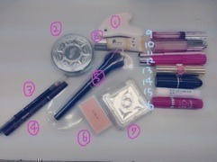

2014/1016Thu" 18 "
18歳になりました！
私から見た18歳は
立派な大人だなぁって印象。
でも私は世間の18歳とは違う
18歳だと思います...
きっと15歳くらいが妥当？笑
でも今こうやって乃木坂46に
いる事が本当に奇跡で
あの時、毎日食べる事しか頭に
なかったこの私が
オーディションを受けて
本当に良かったです！
自信も無いし自己PRも言えないし
経験も無いし本当に0からスタート
だったけど...
今は10くらいにまで
達せれたかな？

去年の誕生日はバレッタの
MV撮影中でサプライズで
祝ってもらいました
懐かしいなぁ...
もうあれから1年。
当初はあまり馴染めていなくて
話しかけられるまで待っていたり
楽屋で顔を伏せていた私が
今では突然抱きついたり
先輩をいじったり
ご飯連れてってもらったり...♡♡
一緒に過ごしていく中で
心の距離が近くなった気がします
毎日楽しいし一緒にいて安心するし
お姉ちゃんが沢山いるみたいで。

私はまだまだ全然未熟者で
皆さんが思う以上に弱くて
脆い人間です。
でもきっと根はポジティブだし
人の笑顔を見る事が大好きなので
いつも元気貰ってるよとか
笑顔をありがとうって
言われるたびにやりがいを感じます
初心と感謝の気持ちだけは
忘れずにファンの皆さんと
一緒に成長していきたいです！
堀ちゃんを応援していて
本当に良かった〜と
心から言ってもらえるような
そんな人になりたい
そして生んでくれたお母さん、
天然でお喋りで時には厳しくて
そんなお母さんが大好き！
今はまだ無理だけどいつか私が
家族を温泉旅行へ連れていけるように
頑張るんだっ

誕生日の日はお仕事があって
その後にみなみと会ったので
ぎゅーってハグしました♡♡
誕生日覚えててくれた！
早くご飯も行きたいっ
白石さんも何欲しい？って
言ってくださって...
もうその言葉だけで最高に
嬉しかったので満足ですm(__)m笑
夜は純奈が泊まりにきて
一緒のお布団で寝たよ笑
"18"の目標は
輝くこと。
どこにいてもいつ見ても
輝いている人になりたいです！
これからも乃木坂46と
こんな堀未央奈をよろしく
お願いします！
皆さんは何がきっかけで
私のことを知ったのかなぁ？
ちょっと気になってた！
良かったら教えてくださいm(__)m
2014/10/16 12:30｜個別ページ｜コメント(1574)
2014/1013Mon堀のこと。
最近あまり更新
できていなくてごめんなさい。
私にとってブログは
読んでいる方に私の事を
より知ってもらう機会だと思うし
この子のブログいつも長いなぁと
思う方も少なくないとは思いますが
初期から更新頻度と内容の濃さに
こだわってきたので
これからも続けていきたいです♪
よろしくお願いします
さてさて...
沢山の質問
ありがとうございました！
長いので是非、時間がある時に
小分けにして読んで下さい
これを見て少しでも何か
私の事を知っていただけたら
嬉しいなぁ☪
17歳ラストの更新

【食】
No1餃子
No2塩タン
No3カツオ
好きな食べ物
可愛くないんです(o_o)
お肉...特に牛肉、タン
魚介類...秋刀魚、お刺身、さざえ、
大あさり、貝柱、寒ブリ
野菜...さつまいも、かぼちゃ、
トマト、とうもろこし、長芋、栗
麺類...味噌バターラーメン、
ミートソースパスタ、そば
おやつ...梅、野菜チップス、枝豆、
饅頭、栗きんとん、わらび餅
お母さんの料理...栗ごはん、
五目ごはん、豚肉の梅しそ巻き、
きゃらぶき、天ぷら
フルーツ...梨、みかん、いよかん
名古屋名物大好き！
味噌煮込みうどん、味噌カツ
きしめん、手羽先、ひつまぶし...
あと冬は鍋を沢山食べます！
お茶はそば茶が大好きです
苦ければ苦いほど良し
〜質問返し〜
○好きなアイスはなんですか？
カップですか？棒ですか？
カップですか？棒ですか？
→チョコ系が好き♡♡
あとコーンよりカップ派です
ソフトクリームは家族で
お出掛けした時にお出掛け先で
ご当地のソフトクリームを
買って食べるのですが小さい頃から
必ずお父さんにされるのが
父「食べる？」私「うん」父「はい」
って言って私の鼻にソフトクリーム
をつけるの！笑
食べようとしたらベチャッだもん
お姉ちゃんにも時々される( ; _ ; )
○美容のために食べてる物とか
ありますか？
→野菜をなるべく食べるように
気をつけています！
あとお豆腐
【ジブリ】

小さい頃、体が弱くて
よく入退院を繰り返していた時に
病室で観ていたDVDがジブリ！
特に好きなジブリ作品は
魔女の宅急便
コクリコ坂から
千と千尋の神隠し
借りぐらしのアリエッティ
ハウルの動く城
となりのトトロ
猫の恩返し...
いつかジブリのお仕事に関わりたい
って幼い頃から思っていました
ほっこりする音楽
細かい描写の絵
美味しそうな食べ物
温かい人物
全部好き！
ずっと行きたいなって
思っているジブリの名所は
ジブリ博物館
ジブリ展覧会
サツキとメイの家
耳をすませばの舞台となった
団地や街巡り
魔女宅の舞台となった
ヨーロッパ巡りです(｡･ω･｡)
つじあやのさんの風になるを
初めとしたジブリのサントラも
よく聞きます♪
【学校】
〜質問返し〜
○学校ではよく喋る方？
→慣れたらよく喋ります！
あと友達の話を聞いてずーと
笑っています...笑
笑いのツボが浅いから大変。
あと人見知りだから慣れるまでは
自分から話しにいけません//_o\
○お弁当で1番好きなおかずはなに？
→焼きたらこ♪
お母さんのお弁当大好き！
おにぎりはいつも大きいサイズを
2個。
○堀ちゃんは学校の休み時間は
どんな感じて過ごしてるんかな〜？
知りたい。笑
→中学時代は友達と話していました！
○みおちゃんは文化祭での
思い出とかある？？
→高1の時しかないけど...
女子4人でブースを回って
お化け屋敷で大パニックに
なったり焼きそばを3人前とお団子と
うどんを食したり楽しかったな〜
○みおなちゃんは学生時代、
制服はセーラー服でしたか？
それとも、ブレザーでしたか？
また、アレンジとかはしてましたか？
→ブレザーです！
セーラー服憧れてたなぁ...
制服はカーディガンは
白色とピンク色を気分で交互に着て
マフラーはイーストボーイの
白ｘピンクでした。
髪型はストレートかハーフアップか
ポニーテール
体育祭はポニーだけど普段は
本当に適当です(o_o)
○速く走れるようになるには
どうすればいい？？
→毎日の基礎練習を大切にする。
あとは自分に負けない！
○好きな教科とか得意な
教科ってなに〜？
→家庭科と国語！
家庭科の調理実習が大好き♪
食物検定も取りました♪
国語は作文を書くのも好きでし
色んな短編集のお話しについて
考える授業も好きです！
【人】

憧れている方。
◎桐谷美玲さん
◎小松菜奈さん
◎新垣結衣さん
◎武井咲さん
◎YUIさん
ちなみに一度お会い
してみたい方は中島哲也さんと
ミラジョヴォヴィッチさん
小さい頃から人見知りな私。
時間はかかるけど仲良くなると
壁が無くなるタイプなんです
だから仲良くなるまでは
何考えてるか分からなかったとか
不思議だったとよく
言われるけど仲良くなったら
考えてることも全部分かるし
凄く単純だよねって
言われます...
幼稚園の時から年上の
お姉さんと一緒にいて
よく面倒みてもらったり
遊んでもらったりしていました！
私の周りは優しいお姉さんが多くて
相談に乗ってくれたりして
私も懐いていました♪♪
【音楽】
◎Tommyfebruary6さん
HOT CHOCOLAT
Lonely in Gorgeous
★CANDY POP IN LOVE★
Strawberry Cream Soda Pop
Love is forever
◎OneDirectionさん
One thing
Kiss you
◎YUIさん
LIFEが1番好き
◎miwaさん
◎FUNKYMONKEYBABYSさん
ALWAYS
おかえりなさい
大丈夫だよ
◎RIPSLYMEさん
黄昏サラウンド
◎ヒラリーダフさん
◎サザンオールスターズさん
◎女性アイドル全般
洋楽は家族の影響でよく聞きます
小さい頃から車で流れていて
今でも聞きます(๑•＿•๑)
【洋服】
◎THEATRE PRODUCTS
◎Lirybrown
◎EGOIST
◎American apparel
◎emoda
◎moussy
◎ZARA
◎sister
◎flower
...他古着(サンタモニカ、シカゴ、
フラミンゴ)
靴はスニーカーだと
Nikeやニューバランスが好き
足のサイズは23.5〜24cmと
意外と大きめです！


お姉ちゃんのお下がりもあります。
スニーカー類の上の左から2番目は
パリで買った物で特にお気に入り♡
お気に入りの小物
お姉ちゃんに貰ったクラッチバック達

買ったり貰ったりした帽子達
〜質問返し〜
○古着はどこで買ってるの〜？？
よく買うお店とかある？？
→古着の質問がとにかく多かった！
私は原宿と代官山かなぁ
あんまり東京詳しくなくて...
新宿とか池袋とか未知の世界。
よく行く古着屋さんはシカゴかな！
品揃えが多くて可愛いです
○部屋着はどんなのを着ていますか？
→毎シーズン、ジェラートピケです
肌触りが良いし季節に合わせて
作られているから快適なの！
今は夏用を着ています
寒くなってきたから冬用も欲しい〜
○今季おすすめのアイテムは？
→サイズ大きめのロングコート♪
あとはもふもふした物！
何に関してももふもふが可愛くて...
携帯ケースも、もふもふ。
リュックも、もふもふ。
○いつもイメージしてるモデル
さんとかいますか？
→青柳文子さん、桐谷美玲さん
鈴木えみさん、
【頭の中】

♡✰♡✰☪♡

マイペースだけど真面目に生きる
ひねくれた事とかずるい事が嫌い
食べて寝る事がとにかく好き♪
お母さんにも未央奈は
食べて寝る事しかしてない
って言われ続けてきました
美味しい物食べて
あったかいお風呂にはいって
ふっかふかのお布団で寝る
昼ご飯何？よるご飯何？が口癖。
でもやる時はやる。
考える時は考える。
ONとOFFをしっかり切り替える。
あと、妄想が大好き
本を読みながら頭の中で
シーンを勝手に妄想したり。
よくみんなに未央奈は妄想しすぎ
って言われちゃいます。
あとは笑う事も大好きです
ツボが異様に浅くて...
仕事中は真面目だけどそれ以外は
ずーと笑ってられる！
だからお笑い番組も好き(*^o^*)
将来は海外に住みたいっていうのが
小学生の時から姉と私の夢で。
ヨーロッパでのんびりしたいな！
沢山の犬に囲まれて
魔女の宅急便みたいな生活が理想〜

〜質問返し〜
○毎回堀ちゃんが書く文章
すごくうまくて感心してます。
何かコツとかあれば
えてもらいたいなー
→全然です>_<
ありがとうございます>_<
初めは思いのまま書いて
保存して少し経ってから
見直して書き直します！
見てもらうものだから初期から
ブログには数日かけてじっくり
書いています♪
○元気がないとき、
落ち込んでいるときどうやって
元気を出してますか？
→岐阜で親友に会って
家族とゆったり過ごして
お風呂に入ってテレビみて
沢山笑う(*^o^*)
あとは時間があればコメントを読む
そうすると自然と笑顔になれます
悩んでいる時は信頼している人に
相談するかな
○兄弟、姉妹だったら誰がほしい？
→優しいお兄ちゃんが欲しい！お姉ちゃんは既にいるから...笑
あと小さい子も大好きだから
妹や弟も沢山いたら楽しいだろうな〜
岐阜に帰ると親戚の子供達と
会うんだけどみんなすっごく可愛くて
膝の上に乗せてあげたり
おにごっこしたり抱っこしたり...
お姉ちゃん〜って来てくれる♡
○未央奈ちゃんみたいに
毎日笑顔でいられる秘訣は？
→う〜ん、ツボが浅いだけだよ〜笑
でも毎日を楽しむには自分の
好きな事をするとか趣味って大切かも
映画見たりお買い物したり
美味しい物食べたり！
○最近ハマっていることを
教えてください
→ニット帽集め
野菜を食べたり飲む事
◎将来の夢は？
→女優さん。
学生役も何を考えているか
分からないミステリアスな役も
思いっきり弾けた役も不気味な役も
何でもこなせる人になりたい！
あとは
動物愛護センターを設立する事。
保健所にいる動物や飼えなくなって
しまった動物を預かって
施設で育てたいっていう
夢はずっと変わっていません
【メイク】

流れ
化粧水、乳液をつける
かっさでマッサージをする
8のコンシーラーを目の下に塗る
JILLのアイシャドウの薄茶色を
まぶたに薄く塗る
ビューラーでまつげをあげる
マスカラを塗る
4のアイラインを目頭から細く
目尻までひく
3のアイブロウで眉毛をナチュラルに
平行になるように書く
7のチークを塗る
13の口紅を塗る
完成(*^_^*)
だいたい15分くらいです
下地は基本しません！
マスカラは上まつげのみ！

1.かっさ...通販
2.パウダー...JILLSTUART
3.アイブロウ...セザンヌ
(ナチュラルブラウン)
4.リキッドアイライン...K-パレット
(ブラウン)
5.チークブラシ...RMK
6.チーク...RMK
7.チーク...JILLSTUART
8.コンシーラー...K-パレット(03)
9.グロス...RMK(CL-01)
10.グロス...Dior
11.リップブラシ...薬局
12.リップ...LIPDress
13.口紅...イヴサンローラン(No14)
14.口紅...MAC(コスタシック)
15.リップクリーム...marks&web
16.リップクリーム...LipDress
〜写真には無い物〜
アイシャドウ...JILLSTUART
マスカラ...メイベリンボリューム
エクスプレスロケット01ブラック
下地...JILLSTUART(ピンクの
コントロールカラー)
〜質問返し〜
○メイクのこだわりありますか？
→出来るだけナチュラル！
でも頑張ってメイクしたのに
すっぴん？って聞かれると悲しい>_<
あとはリップはこだわります！
家にいる時も無色リップを塗り塗り。
○堀ちゃんはアイラインは
どういう風に引きますか？→目尻を少したらして引きます！
ラインの引き方は細めにサッと
目頭から♪ブラックよりブラウン。
○自撮りのコツとかあるの〜？
→初期から自撮りが苦手で
ファンの方にも下手だねって
言われてたのですが...
Camera360っていうアプリの
freshとsweetで撮ると
綺麗に撮れますよ♡
メンバーもよく使っています
上手くなるように日々研究！
○注目している化粧品は？
→まつげ美容液を友達の勧めで
買ってみました！まつげが
少しずつ長くなるんだって(^o^)
使ってみて良かったら紹介します！
オススメのリップとか口紅
化粧下地とかもしあったら
教えて下さい！
【ダイエット】

◎朝はしっかり食べる
◎お菓子が食べたい時は野菜チップス
◎パンより白米
◎19時以降は控える
◎豆腐、納豆、枝豆、フルーツを
食べる
◎休日はお買い物しながら沢山歩く
◎朝起きたら肩甲骨を回してほぐす
◎寝る時はメディキュット履く
◎可愛い人の画像を集める
(私の待ち受けは小松菜奈さんと
武井咲さんと桐谷美玲さんと
新垣結衣さんをコラージュした画像)
ですかね...
私、太りやすい体質なので
小麦類を摂りすぎないように
気をつけます
〜質問返し〜
○未央奈ちゃんめっちゃ
スタイルいいけど普段意識
してる食事とか運動とかってあるの？
→全っ然( ; _ ; )
食事は、私はとにかく沢山食べるから
沢山食べた次の日は控えます...
あとお腹空いたらフルーツとか
枝豆を食べる！
【髪】
小学1〜4 パッツンミディアム
5年生 センター分けロング
6年生 パッツン前下がりショート
中学1〜2 パッツンボブ
3年生 パッツンロング〜今に至る
シャンプーリンス...アロマシロップス
(イスタンブールの香り)
これは楽天市場で買いました♪
メイクさんにいつも髪の毛いい匂い
って褒められます。嬉しい
前髪の頼み方は「眉下ぱっつんで
毛先だけギザギザにお願いします」
って言って切ってもらいます
握手会で私の所に来てくれる
女の子、ぱっつん多い気がする...♡
〜質問返し〜
○ぱっつん以外しないの？
→興味はあります
センター分け久しぶりに
してみたいなって♪
でも今はぱっつん黒髪を継続します
伸ばしたらこんな感じかな〜
眉毛が情けないの。笑

○上手に髪の毛巻く
コツとかありますか？
→練習すれば上手くなると
思います(๑•＿•๑)
私もへたっぴ...
○未央奈はどんな髪型を
よくしますかー？
→お仕事ではストレート、ゆる巻き、ポニー
ツインあたりが多いかな！
私服の時は可愛いゴムとかリボンで
結んだりピン留めたり✡
○どうやったら未央奈ちゃん
みたいにきれいなストレートヘアに
なれますか？(>_<)
気を付けていることなど
教えてほしいです！！
→髪質が細くて柔らかいので
寝癖がつきやすくて大変です...
ちなみに髪質が外人さんみたい
ってSeventeenのメイクさんに
言われてそんなにふわふわなんだって
自分でも驚きました
確かにトリートメントに
行き始めてから髪が
柔らかくなった気がする...
太い髪質に憧れる
あとは染めた事が無いから
髪は痛みにくいです
ストレートアイロン...ツヤグラ
巻きアイロン...クレイツ
【スキンケア】
岐阜にいるときは
ずっとすっぴんだったので
東京に来てからメイクを
少しずつするようになって、
初めは肌荒れもしたしメイクが
嫌ですぐに落としていたけど
少しずつ肌も慣れました♡
化粧水と乳液とメイク落としは
なるべく変えずに同じ物を使用
◎化粧水...ハトムギ化粧水
コットンにひたひたに付けて
肌に馴染ませる
◎乳液...エルボHQブライトクリーム
◎メイク落とし...AHA
◎ボディクリーム...BODYshop
〜質問返し〜
○未央奈はほぼスッピンのとき
多いけどなんでそんなに
白くて肌綺麗なのー？
→お休みの日は出かける
としてもすっぴんが多いです！
肌を休ませる(O_O)
でも顔には日焼け止めスプレーを
たんまりとかけています。
あとトマトとかフルーツが
大好きだから沢山食べるよ〜
でもね、この夏ロケで
ちょっと日焼けした。笑

ウインク下手やわぁ...
○使ってるハンドクリームって
何ですか？
→BODYshopのグレープフルーツ
の香りのボディバターです
柑橘系♪
○未央奈ちゃんは爪の
お手入れしてますか？
もししていたら教えてください♡
→特にしてないです！
塗るとしても透明のジェルくらい。
【香】
香水...JILLSTUART
ルームミスト...ジェラートピケ
ヘアミスト...ジェラートピケ

匂いフェチです...
特に柑橘系の爽やかな香りが好き！
柔軟剤とか洗剤の匂いも♡
ランキングをつけるなら
1位 キンモクセイ
2位 柔軟剤
3位 ラベンダーかな
男性の香水の香りなんて握手会か
お父さんしか分からないから...
握手会で好きな香りだって
思ったらつい、いい香りですね
って言っちゃいます
あと私のお父さんが付けている
香水が本当に好きな香りなの！
男性に付けてもらいたい
香水No1ですね
【ドルチェアンドガッバーナの
ライトブルー】
迷われている方は是非（＾_＾）
おまけ
2期、家族、親友から
見た私を聞いてみました
初めて聞いたからこんなふうに
思われていたなんて恥ずかしい。
時間が無くて1期生の方以外です！
○伊藤かりん
「つかめない」
○鈴木絢音
「私のお姉ちゃん
なんでも話せて、一緒にいると
笑顔になれるそんな人です」
○新内眞衣
「岐阜県から来た天然少女。
ぼーっとしてるように見えるが、
内に秘めたる思いはメラメラしていて、
結構自分のことを研究している努力家。
最近では、不思議ちゃんキャラが
爆発的にハマり、その怪奇行動に
今後も目が離せない。」
○佐々木琴子
「言葉では表しにくい
時々なまる
二期生のこと考えてくれてると思う
O型！ってかんじ」
○渡辺みり愛
「堀未央奈は人見知りだけど、
仲良くなるにつれてテンションが
おかしくなります！だけどやる時は
やるし、OFFモードの時は本当に
OFFモードなので、OFFモードの時は
話しかけても素っ気ないです！
でもでも大好きなお姉ちゃんです(ヽ´ω`)」
○寺田蘭世
「堀どのはお世話焼いてくれたりして
ママ？！お姉ちゃんみたいな
ところもあるけど最近はうちよりも
幼い子みたいに騒いだりしてるの
よくみる気がする！
でも騒いでたりするほうが
みおならしい気もする！
んでもって、そのテンションも
なかなか好きだよ♡
んでもってんでもって
○えさをあたえる
よく食べてるからね（笑）
○オシャレさんなのでまめに
洋服をあたえましょう
○よく寝てる
この3つは堀を飼うための方法( ´` )」
○矢田里沙子
「古着大好き人間
第一印象との激しいギャップ
ちょっと独特な個性と
ガラスのハートを併せ持つ岐阜少女」
○山﨑怜奈
「似てないようで似てるような、
でもお互い認めない(笑)
仲はいいです（＾ω＾）」
○相楽伊織
「みおなは人見知りだけど、
伊織に話しかけてくれたり、
あとなんかいつも笑ってて、
いつもなんか食べてるイメージ！」
○伊藤純奈
「まず最初に。
最近会えなくて淋しいです。笑
未央奈はねー、メンバー愛が強い！
とくに純奈と日奈子の事が好きだよね？
ん？違う？(((o(*ﾟ▽ﾟ*)o)))笑
アンダーライブが始まった時に
メールをくれたりくだらないやり取りを
して癒されたり助かってるよ♡
〈説明書〉
・焼肉を与えましょう。
・ついでに純奈も与えましょう。笑
・定期的にお買い物に連れて
行きましょう。
・妄想には付き合ってあげましょう。
途中から未央奈はとってもご機嫌に
なるので話を無視しても気付きません。
・起こす時はしつこく起こしましょう。
なかなか起きません。
未央ちゃん攻略はこれで完璧なはず！」
○北野日奈子
返答なし。笑
日奈子体調早く治って〜(´；ω；｀)
○米徳京花
「真面目そうだけど一緒にいて
親しくなっていく内に、
すごい活発だったり、独自の趣味が
あることに気づく！一言で表したら、
「個性的な子」かな！
好きな物が結構お互い
似てるよね(๑・ .̫ ・๑) 笑」
○岐阜の友達M
中学からの親友でJと私と3人で
よく岐阜や東京で遊ぶ仲の1人。
大晦日とか夏祭りも毎回この3人！
「しっかりしとるところもあり、
たまに見せる天然もある
いつも笑ってるけど、でも相談とか
すると真剣に考えてくれて
いつも助けてくれる！」
○岐阜の友達J
中学からの親友でずっと一緒。
「じわじわおもしろい！
独特の分析力！
上手く伝えられない（笑）
とにかく未央の笑いのセンスが好き！」
○岐阜の友達N
幼稚園から仲良し。
「自由人でしっかりしているけど、
天然要素があってほのぼのしている。
見てて面白い人。」
○父
「表面と内面のギャップが面白い子」
○母
「癒し」
○姉
「自分も周りも笑えればそれが幸せな子」
でした。
ふむふむ
最後に...
乃木坂に入って素敵な事が沢山
ありました。
メイクもした事がなかった私が
美意識を持つようになった
沢山の人前に出る機会が
多いから色んな事が発信できる
夢も与えられる
ファンの方と支え合える
人見知りが少し治る
これからも色んな経験をして
チャレンジ精神と自分らしさを
大切にまっすぐ進んでいきたいです！
少しでも私に興味を
持ってくださった方が
この記事を読んで堀未央奈って
こんな子なんだと
思ってくれたら嬉しいなと思って
この記事を書きました！
読んでくださって
ありがとうございました

おやすみおな(ヽ´ω`)
2014/10/13 23:40｜個別ページ｜コメント(1311)
2014/1007Tue縮んだニット
こんばんは♡♡
10月になりました
さつまいもの季節
女の子ブログがあと少しで
完成なのでちょっと
お待ちください...！

10/1代々木体育館で行われた
Girlsaward2014に乃木坂46が
ライブ出演しました〜！
気づいたら片想いでは
生田さんのポジションを
急遽やらせていただき...
初めてだったので緊張しました。
あ、そうだ
出番直前に小松菜奈さんを少し
お見かけして私は大興奮でした。笑
楽屋のテレビとかで小松菜奈さんが
出ているとみんなが未央奈！って
教えてくれるの
写真集ももちろん買うんだっ
やっぱり黒髪ぱっつんロングの方を
好きになる傾向があるかも...
自分を除く。笑

七瀬さん、白石さん、橋本さん
松村さん、玲奈さんのランウェイも
途中から客席側で見ていたのですが
みんなかっこよくて。
たくさん手を振ったり
名前を呼んだり...笑
最高に可愛かった！
楽屋の席はみなみと深川さんに
挟まれていたのでアイスを食べたり
色々話したり楽しかった〜
深川さんはお姉ちゃんみたいで
話しやすくて構ってくれるの♡♡
あと高山さんと白石さんに続いて
真夏さんにも今度ご飯連れてって
もらう約束しちゃいましたっ
わくわく

そしてSeventeenモデルの
江野沢愛美さんと三吉彩花さんに
お会いできました！
嬉しかった〜
そして色んなステージを見させて
いただいて沢山刺激を受けました
私もまだまだこんなんだけど
いつか歩いてみたいです。
憧れたり夢を持つ事って向上心に
繋がるから大切！

白石さんとも早くご飯行きたいな♪♪
お忙しいけど私はその日を楽しみに
首を長くして待っています〜
とにかく勉強になった1日でした！
そんな代々木体育館。
去年の昨日
真夏の全国ツアーFINALで
7枚目選抜が発表されました！
皆さんにお披露目するのは
この日が初めてだったので
緊張という緊張を超えるくらい
ドキドキしていて...
今でもまだ覚えています。
いつまでも初心と皆さんへの
感謝の気持ちは忘れずに
一生懸命頑張って行きたいです！
1人1人の方としっかり向き合いたいし
皆さんが私を大切にしてくれる分
私も大切にしたい。これからも
こんな私ですが宜しくお願いします
コメント返し
◎No.2 ぴのりんごさん
みおなー
○はーい( ˙ ³ ˙ )ﾉ
◎No.9 虎さん
みおなー
○2回目だぞっ
◎No.29 市松人形さん
市松人形のコスプレみたい！
○市松人形？？
何ですか〜？気になる( ˆ o ˆ )
◎No.290 百香さん
未央奈\( ˆoˆ )/
2日間ありがとう！！！
ちょっとね、久しぶりの
握手だったから
忘れられてるんじゃないかな〜？
とか考えてたけど入った
瞬間ももか〜！って
言ってくれて安心した(T ^ T)♡
初めて未央奈と握手したときは
めっちゃ緊張して
話したいことも全然うまく
話せてなかったけど、
最近は楽しく握手
できるようになってきたよ〜♪
○忘れないよ〜(｡･ω･｡)
私もいつも楽しい♪♪
また待っとるね！
以上
そして昨日の生放送に
出演しましたが...
Rの法則の5期生に選ばれました！
初めてのレギュラー番組。
この機会でトーク力や発言力を
身につけて次へ生かしたいし
まだオドオドしてしまいますが
先輩方みたいにリラックスして
話せる様になるためにこれから
一生懸命取り組みたいです♪

声をかけてくれた、
さとれなちゃん！
生放送では隣でした
私らしさを番組で
出していけるように。
そして見ている方に
楽しんでもらえるように頑張るので
是非見ていただけたら嬉しいな〜
宜しくお願いします！
収録中は脳は眠らせていません！
起きてます！笑
楽屋は...お察し下さい(O_O)笑
人見知り治らず
今日生駒さんやみささん達が
頑張ってね〜と言って下さって
嬉しかったです♪♪

｢私、起きる。」のMV中で
みなみおなというユニットを
組みました〜
柳沢監督が私達のブログとかから
みなみおなを知ってくださっていて
台本に【みなみおな】って
書いてあって2人で喜びました♪
衣装はゴスロリで
小悪魔な感じです
小悪魔2匹♡
告知
◎10月9日24時58分〜
ミュージックドラゴン
◎Popteen11月号発売中
◎OVERTURE発売中
【ファッションｘアイドル】
素敵な発想〜

私はNewEraを被ってます
ちなみに富士登山の
ニット帽もNewEra！
ピンクって男女関係なく使えるし
派手だけど服をシンプルにすれば
凄く可愛いと思うの！
握手会で被ろうかなあ
最近握手会が無いから寂しい。
皆さんの笑顔が癒しなんです！
いつもありがとうございます♪
18日はハロウィン仮装、キキ、
私服と盛りだくさんさん
もう少し寒くなったら握手会で
ジェラピケ着ようかなっ
迷い中
そして...
明日は10thシングル
何度目の青空か？の発売日！！
私の個人PVはタイプCです。
カップリングも含めて沢山の方に
聞いていただきたいな〜
よろしくお願いします。

日奈子、体調お大事に。
アンダーライブ観に行くから
頑張ってね！
終わったら約束の焼肉行こ♪
今日は仕事の合間に先輩達に
遊びに連れてってもらいました〜
そのお話と
富士登山の事はまた次回！
おやすみおな(ヽ´ω`)